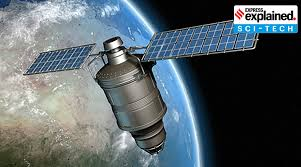
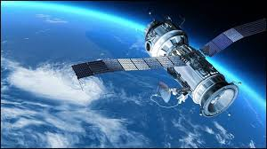

India's Major Satellites🛰
The Satellites
India has made significant progress in space technology, with a focus on satellite development. The Indian Space Research Organisation [ISRO] has launched several satellites, including GSAT and NAVIC, which have reformed communication, navigation, and disaster management in India.
GSAT [Communication Satellite]

♢ GSAT satellites were launched to provide communication services, television broadcasting, telecommunications, and weather forecasting.
♢ GSAT satellites are equipped with transponders that enable communication services, including voice, data, and video transmission.
♢ GSAT satellites have improved communication services in India, enabling:
- Television broadcasting to remote areas
- Telecommunications services, including mobile and internet connection
- Weather forecasting and disaster management
NAVIC [Regional GPS System]

♢ NAVIC was launched to provide a regional navigation system, offering accurate positioning and timing services.
♢ NAVIC consists of a constellation of seven satellites, providing navigation services with a 10-meter accuracy.
♢ NAVIC has improved navigation services in India, allowing:
- Accurate positioning and timing services for various applications, as well as aviation, maritime, and land navigation
- It improved disaster management and emergency response services
- Enhanced mapping and surveying services